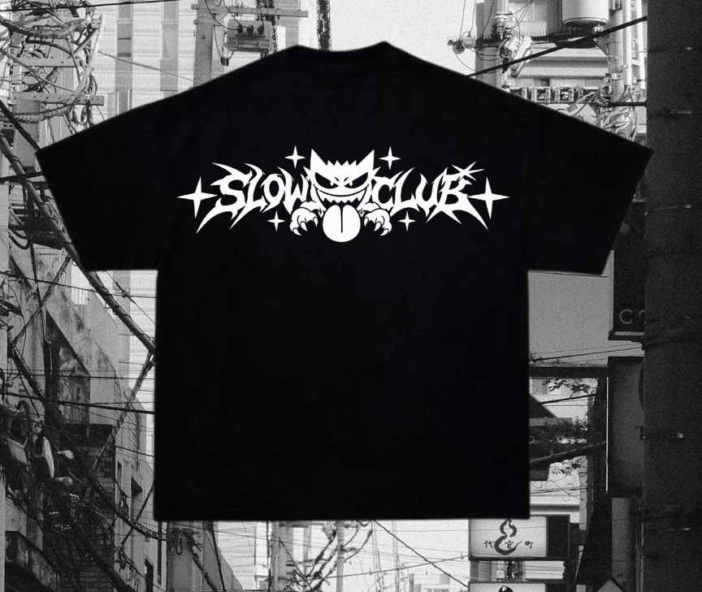
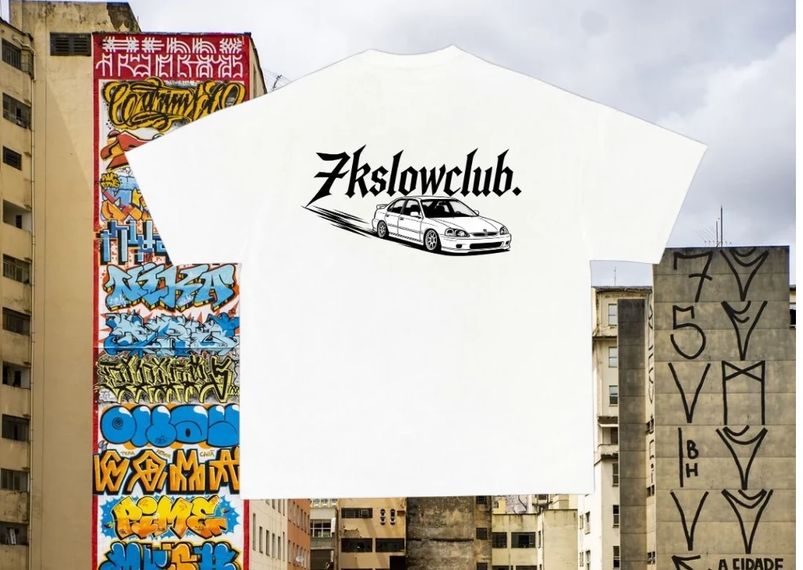

01 / 027K ORIGINAL
7KSLOWCLUB / DROP 001PRETO
Camiseta oversized preta SlowClub
Camisa preta de algodão arte gengar.
PREÇO EM BREVE
Duas camisetas. Uma identidade. Para quem faz do próprio ritmo um estilo de vida.
EXPLORAR A COLEÇÃO
[ 01 — A COLEÇÃO ]
O essencial, sem ser igual.
Escolha sua peça. Escolha seu tamanho.
Camisa preta de algodão arte gengar.

Camisa preta de algodão arte Civic g6.
As opções de tamanho estão disponíveis para seleção. As vendas serão habilitadas após a integração com o Mercado Livre.
Não seguimos a pressa dos outros. A 7kSlowClub é sobre atitude, expressão e autenticidade.
7kslowclub ✳[ PRÓXIMA PARADA ]
A loja está em versão de apresentação. A compra e o pagamento serão ativados futuramente na plataforma do Mercado Livre.